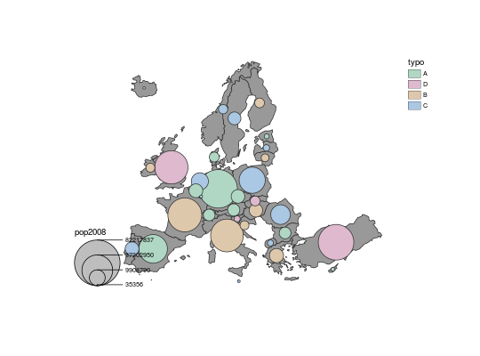

Proportional Symbols Typo Layer
Plot a proportional symbols layer with colors based on qualitative data.
propSymbolsTypoLayer(spdf, df, spdfid = NULL, dfid = NULL, var, inches = 0.3, fixmax = NULL, symbols = "circle", border = "grey20", lwd = 1, var2, col = NULL, colNA = "white", legend.title.cex = 0.8, legend.values.cex = 0.6, legend.var.pos = "bottomleft", legend.var.title.txt = var, legend.values.rnd = 0, legend.var.style = "c", legend.var.frame = FALSE, legend.var2.pos = "topright", legend.var2.title.txt = var2, legend.var2.values.order = NULL, legend.var2.nodata = "no data", legend.var2.frame = FALSE, add = TRUE, k = NULL)
Arguments
- spdf
- SpatialPointsDataFrame or SpatialPolygonsDataFrame; if spdf is a SpatialPolygonsDataFrame symbols are plotted on centroids.
- df
- a data frame that contains the values to plot. If df is missing spdf@data is used instead.
- spdfid
- identifier field in spdf, default to the first column of the spdf data frame. (optional)
- dfid
- identifier field in df, default to the first column of df. (optional)
- var
- name of the numeric field in df to plot the symbols sizes.
- inches
- size of the biggest symbol (radius for circles, width for squares, height for bars) in inches.
- fixmax
- value of the biggest symbol. (optional)
- symbols
- type of symbols, one of "circle", "square" or "bar".
- border
- color of symbols borders.
- lwd
- width of symbols borders.
- var2
- name of the factor (or character) field in df to plot.
- col
- a vector of colors.
- colNA
- no data color.
- legend.title.cex
- size of the legend title.
- legend.values.cex
- size of the values in the legend.
- legend.var.pos
- position of the legend for var, one of "topleft", "top",
- legend.var.title.txt
- title of the legend (numeric data).
- legend.values.rnd
- number of decimal places of the values in the legend.
- legend.var.style
- either "c" or "e". The legend has two display styles, "c" stands for compact and "e" for extended.
- legend.var.frame
- whether to add a frame to the legend (TRUE) or not (FALSE).
- legend.var2.pos
- position of the legend for var2, one of "topleft", "top", "topright", "left", "right", "bottomleft", "bottom", "bottomright".
- legend.var2.title.txt
- title of the legend (factor data).
- legend.var2.values.order
- values order in the legend, a character vector that matches var modalities. Colors will be affected following this order.
- legend.var2.nodata
- text for "no data" values
- legend.var2.frame
- whether to add a frame to the legend (TRUE) or not (FALSE).
- add
- whether to add the layer to an existing plot (TRUE) or not (FALSE).
- k
- share of the map occupied by the biggest symbol (this argument is deprecated; please use inches instead.).
See also
legendBarsSymbols, legendTypo, legendCirclesSymbols, legendSquaresSymbols, typoLayer, propSymbolsLayer
Examples
data("nuts2006") ## Example 1 plot(nuts0.spdf, col = "grey60",border = "grey20")nuts0.df$typo <- c(rep("A",10),rep("B",10),rep("C",10),rep("D",4)) propSymbolsTypoLayer(spdf = nuts0.spdf, df = nuts0.df, var = "pop2008", var2="typo")## Example 2 #Countries plot plot(nuts0.spdf, col = "grey60",border = "grey20", add = FALSE)nuts0.df$typo <- c(rep("A",10),rep("B",10),rep("C",10),rep("D",4)) nuts0.df$typo[1:3] <- NA nuts0.df$pop2008[4:6] <- NA propSymbolsTypoLayer(spdf = nuts0.spdf, df = nuts0.df, var = "pop2008", var2="typo", symbols = "circle", legend.var.pos = "topright", legend.var2.pos = "right", legend.var.title.txt = "Total\npopulation (2008)", legend.values.rnd = -3, legend.var2.title.txt = "Category", col = carto.pal(pal1 = "pastel.pal", 4), legend.var2.values.order = c("D", "A", "B", "C"), legend.var.style = "c")# Layout plot layoutLayer(title = "Countries Population & Color in Europe", sources = "UMS RIATE, 2015", scale = NULL, frame = TRUE, col = "black", coltitle = "white")